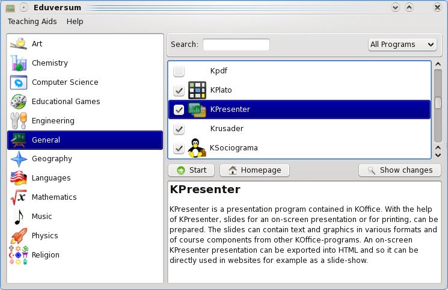
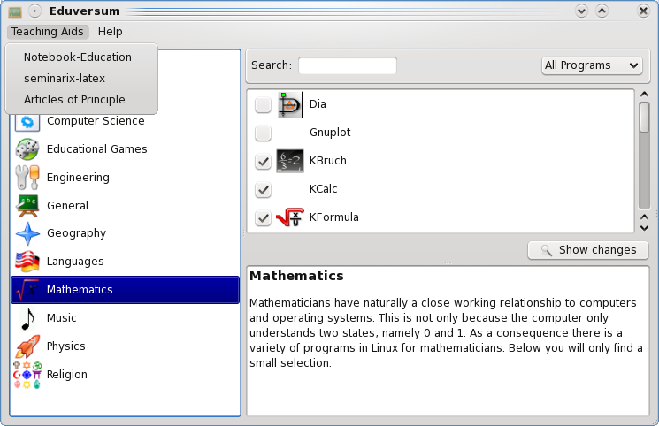
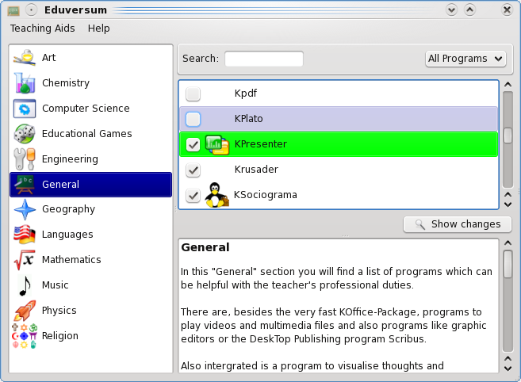
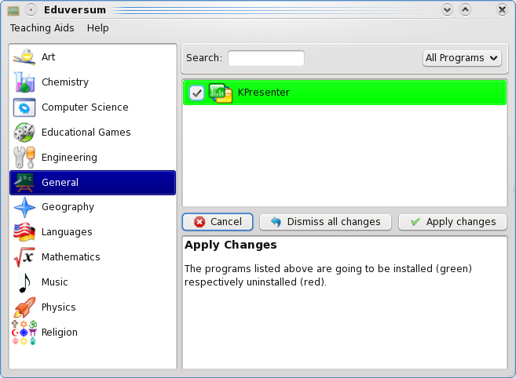
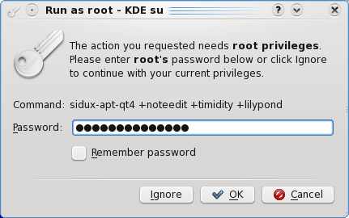
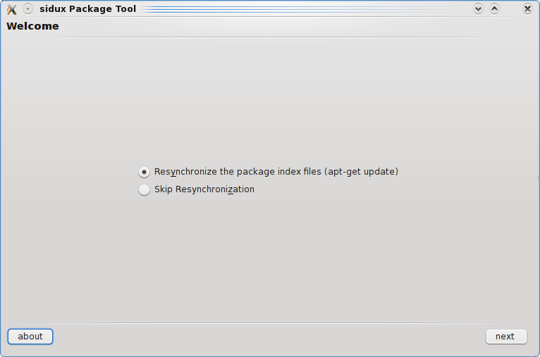
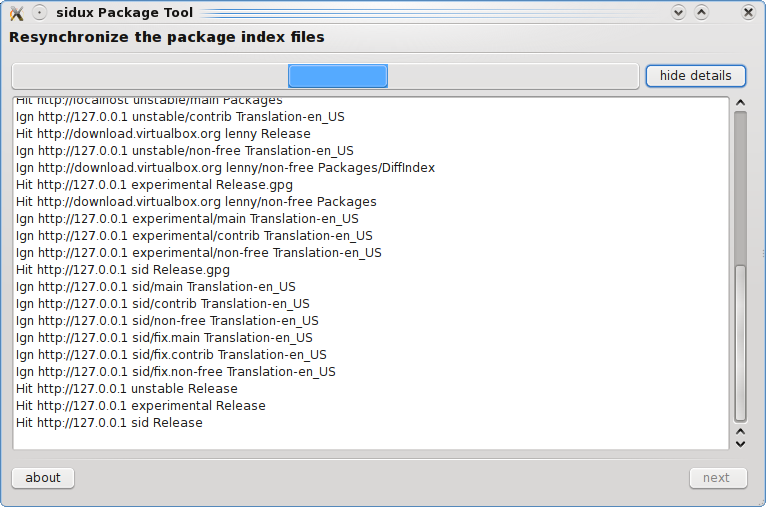
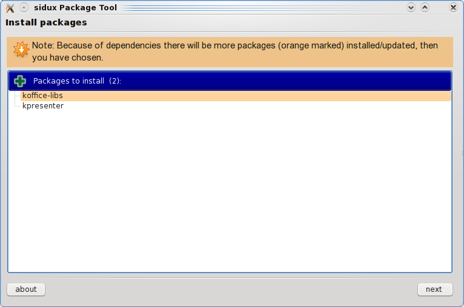
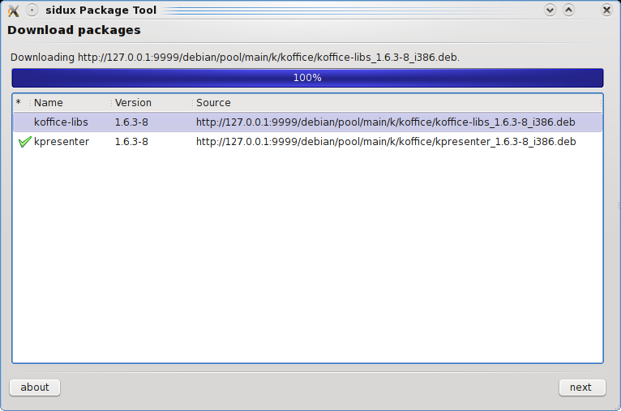
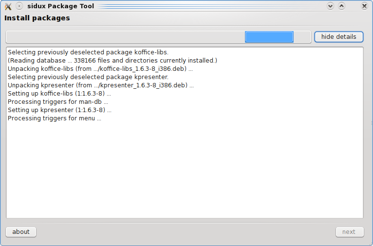

Instructions for using Eduversum
General
In Eduversum there is a considerable list of educational programs, which were favoured by the creators of seminarix.
This HowTo explains in short how to deal with programs which are introduced in the manual but not contained on the live-CD/DVD.

You can start an installed application by double clicking on the program's icon or by clicking the < Start > button.
Teaching Aids
Under the menu item "Teaching Aids" you can find teaching aid (examples), articles concerning seminarix and free software.

Installation of programs which are not installed
Program Selection
For that you have to choose the menu item < Only not installed > which is situated in the upper right corner of the selection window.
With an active Internet connection, it is possible to easily install programs which are not contained on the CD/DVD but are listed in the menu system.
To do that you select the specific program (here "KPresenter" as example) and then you click the < Show changes > button.

Installation start
Now click the < Apply changes > button to start the installation.

As said, an active Internet connection is necessary!
Enter the password
Naturally you need to have a "root account" otherwise the installation will be aborted.
This is for your own safety.
- On Linux systems, only the "root" has access to system-specific data and settings. This protects the system from abuse.
- The unauthorized installation of a program is prevented.
- In this way inconsiderate actions are prevented.
More information about this can be found in the corresponding tutorials.

Enter the "root" password and click the < OK > button.
Update Dialog
Now the internal package data bank has to be updated.
Select "Resynchronize the package […]".

Click on < next >.
Update Information
If you click on < show details > , you can see what is happening.
Here the output of the process updating the internal package index.

When the update is finished, click on < next >.
Information about the changes
Now you can see the changes to be carried out.
In this case the shown packages will be installed.
Colour highlighted packages will be installed/upgraded because of dependency reasons.

Click on < next > to start installing the corresponding programs.
Download Dialog

Click on < next > when the downloading is finished.
Installations Dialog

When the installation is finished click on < close >.
If you want to learn more about the installation process under Debian, please read the corresponding Howto's and/or "man pages" (man apt, man apt-get,...).
Start an installed program
Choose the coresponding section, in this case "General" and select the program (here KPresenter).

Click on < Start >.
Note
If you install a program during a "live session" (live-CD/DVD), the changes are only stored temporarily in the "ram" and will be lost when you end the session!
To prevent that you can, with the help of the "live-CD/DVD", create a persistent home directory.
Information on this subject can be found in the "sidux manual" and in the "seminarix manual".
Useful Links
- seminarix Homepage: http://www.seminarix.org
- sidux Homepage: http://www.sidux.com
- sidux Manual: http://manual.sidux.com/
- sidux wiki: http://sidux.com/index.php?module=Wikula
Info
The screen-shots were created with kSnapshot.
Thanks to
A thanks to Roland Engert (RoEn) and Dinko Sabo (cobra) for their support, as well as the whole "sidux-seminarix Team".
Translation by Nikolas Poniros (edhunter).
Copyright © 2009, Hendrik Lehmbruch: CC-by-SA 3.0